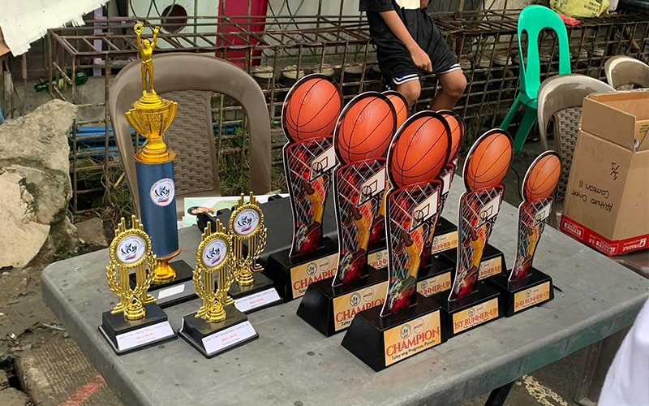

Community Clean-Up Campaigns
Villa Angeles and Angeles II Youth Organization spearheaded an
impactful Community Clean-Up Campaign that left a lasting impression on their neighborhoods.
Through a collective effort, members rallied together to beautify parks, streets, and public
spaces, demonstrating a strong commitment to environmental stewardship and community pride.
Armed with gloves, trash bags, and unwavering enthusiasm, volunteers meticulously cleared
litter, debris, and unsightly waste, transforming neglected areas into vibrant, welcoming
spaces for all to enjoy. Beyond the physical cleanup, the campaign sparked a sense of unity
and shared responsibility among residents, fostering a culture of environmental awareness and
civic engagement. As the sun set on the final day of the initiative, the streets gleamed with
newfound cleanliness, serving as a tangible testament to the collective impact achievable through
grassroots efforts and community collaboration.
Community Gardens
The Community Gardens project initiated by Villa Angeles and Angeles II Youth Organization
has blossomed into a vibrant hub of sustainable living and community engagement. Nestled within
the heart of our neighborhoods, these gardens serve as both a source of fresh produce and a gathering
place for residents of all ages. What began as a few plots of land transformed into lush green spaces
teeming with a variety of fruits, vegetables, and herbs, tended to lovingly by dedicated volunteers.
Beyond just cultivating crops, these gardens have become catalysts for connection and education, hosting
workshops on gardening techniques, composting, and healthy eating. Families come together to plant,
nurture, and harvest, fostering a sense of shared ownership and pride in their collective efforts.
The Community Gardens of Villa Angeles and Angeles II Youth Organization stand as living symbols of
sustainability, community resilience, and the power of grassroots initiatives to transform neighborhoods
for the better.